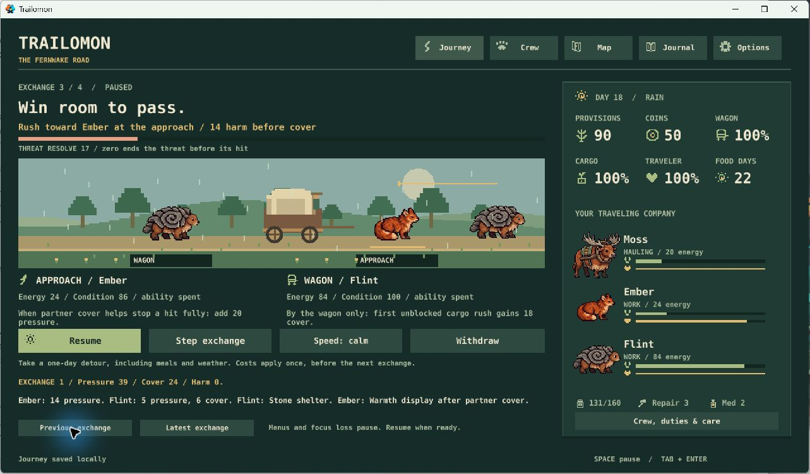

Trailomon · expedition review · October 30, 2026
Make each encounter earn its place on the road.
My next batch: measure the whole journey, make companion decisions easier to read, then give the existing route and creatures more character. Astronarch leads combat preparation and combinations; Oregon Trail still leads the game.
Verdict: building core systems
We have a complete playable expedition and the first automatic-combat implementation. We are ready to tune how the systems work together. We have not yet demonstrated the intended 20–35 minute journey, finished the art, or completed release preparation.
- Playable now: six landmarks, two route branches, six creature species, eighteen event definitions, foraging, weather, travel duties, two automatic encounter types, peaceful alternatives, persistent companions and discoveries.
- Basics already present: save/resume, backup recovery, combat resuming paused, sound on/off, reduced motion, labeled icons, and a clean offline Windows ZIP. Settings live in the saved snapshot. We do not need to invent a second save or settings system.
- Fresh checks: 29 Lua tests and 12 review-server tests pass on the current source. The previous merged game change passed Windows CI, native persistence and 27 GUI states. No currently failing automated check was found. This audit did not repeat the desktop playtest.
- Real gaps: battle-to-travel balance; reusable per-run bot reports; clearer ability readiness; distinct enemy behavior; richer landmark presentation; finished creature anatomy and animation; a sound listening pass; a full post-combat journey playtest. Injected keys remain unreliable, so native input-handler checks do not establish physical keyboard usability.

What the evidence says
The fighting-first bot delivered on time in 5 of 40 runs; the two-strategy baseline delivered in 37 of 80. Those strategies differ in other choices, so this does not prove combat is too expensive. It does tell us to compare controlled decisions before changing numbers.
In the existing encounter matrix, fresh crews held off scavengers in 1,440 of 1,440 trials, while guardian encounters succeeded in 420 of 1,440. At 16 starting energy, guardian encounters won none of 1,440. Victory, injuries, cargo loss, recovery days, and on-time arrival all belong in the same assessment. These are sampled scenarios, not a target win rate.
Today's bots print aggregate outcomes and fail on a bounded journey that never ends. They do not yet produce the reusable decision-by-decision journey reports required by S2. Both enemies also share target probabilities and the same alternating heavy-rush pattern; their objectives and penalties differ more than their behavior.
Choose the next batch
These are proposals for what to prioritize next. For work marked already approved, YES selects the proposed slot; NO leaves it out of this batch. Your earlier P1–P5 approvals remain in force unless your comment cancels or changes one. Blank selections do not add work. N2 and N3 are optional additions from the combat review; you can answer here without answering that page again.
Recommended order: N1 → N2 → N5/N6. Then N4 and N7, with N8 before a release candidate. Keep the roster and route small while they become more expressive.
1 · N1Measure expedition balance first
Complete the missing bot report command, then compare fighting, peaceful resolution, and withdrawal from matching saved encounter starts. Keep the same crew, supplies, and downstream policy. Record travel days, food, fatigue, injuries, cargo, recovery actions, outcome, and stalls. Tune existing costs only after inspecting those reports.
Already approved direction: P1. Roadmap S2 → S5. This selects the next implementation batch.
Why: the 5/40 fighting result is a warning, but our current strategy comparison cannot isolate combat's effects. An encounter can be easy and still ruin a delivery.
Cost: one reporting PR, then one bounded tuning PR; no new combat or survival systems. Recommendation: YES, first.
2 · N2Explain the crew's next trigger and next job
Add the contextual ability-readiness line from C1 and the post-combat travel consequence from C3: what condition the ability needs, or why it cannot fire, and whether the assigned hauler now needs recovery. Use the existing labels and icons; do not add a resource or a new screen.
Optional additions: combat-1 C1 + C3. YES here approves both bounded changes; a note can select only one. The latest explicit decision wins across pages.
Why: the successful Flint/Ember combination is explained afterward in the log. Predicting it currently requires combining several descriptions. Energy loss matters most when it changes the next travel decision.
Cost: one or two small UI PRs with preview/resolver agreement checks. Recommendation: YES, after N1's measurements.
3 · N3Test a distinct guardian pattern
Prototype C2's authored cargo shove, approach warning, and heavy rush within the existing four-exchange limit. Preview the pattern and compare it with the current guardian before adopting it.
Optional addition: combat-1 C2. This is the same bounded experiment, not another enemy or a new region.
Why: current opponents share targeting probabilities and heavy-rush timing. A recognizable pattern could make position selection more deliberate.
Cost: one behavior experiment plus save, preview, and balance checks. Recommendation: useful after N1/N2; not the first task.
4 · N4Make a gathering day easier to judge
Finish the bounded-foraging clarity pass: place, remaining yield, crew effort, meals consumed, carrying room, and net food. Reuse the same resource symbols used during travel. Keep hunting deferred.
Already approved: P2, roadmap S6. Suggested slot: after combat clarity and before equipment.
Why: gathering already consumes a day and meals, depletes the stretch, and respects capacity. The existing preview has accounting checks; the remaining work is making the whole cost easy to understand.
Cost: one focused presentation/playtest PR; no gathering minigame or crafting system. Recommendation: YES for this sequence, after N1/N2.
5 · N5Make the familiar road turn into wilderness
Give the six existing landmarks deliberate scenery and short ecological details. Let maintained wheel ruts, roofs, and reliable signs fade into wider horizons and creature-shaped terrain. Make Mossbell's resupply role and the upland commitment recognizable.
Already approved: P3, roadmap S7. Suggested slot: the first content pass after combat tuning.
Why: increasing remoteness is one of the five pillars and a repeated owner preference. The playable route exists; its visual progression is still unfinished.
Cost: two or three small landmark/lore PRs using the current route; no additional region. Any new paid art work keeps its separate spending requirement. Recommendation: YES, the strongest next identity improvement.
6 · N6Give the six companions finished silhouettes
Start with a wagon-scale anatomy and grayscale comparison, then refine the existing selected studies: hollow Brindlehorn antlers, Reedskipper's paddle tail, coherent perspective, and recognizable role poses. Review each species in the actual game before accepting it.
Already approved: P4, roadmap S8. Suggested slot: alongside the wilderness content pass, before more creatures.
Why: the current art is selected development material with simple motion. Distinct anatomy and readable action poses remain known gaps under the standing art direction.
Cost: an audit plus small species batches; effort depends on rejected variants. Reuse current assets first; new paid generation is a separate spending decision. Recommendation: YES; keep the six-species scope.
7 · N7Try three work items after combat settles
Implement the approved single-slot, three-object equipment experiment. Each object should trade a useful travel effect against an encounter or carrying cost. Judge it by whether it changes a crew plan, not by increasing damage numbers.
Already approved: P5, roadmap S9. Suggested slot: after S5 and the resource-clarity pass. This approval is already recorded.
Why: equipment could add Astronarch-like preparation depth, but adding it before the baseline is understood would make balance causes harder to separate.
Cost: roughly two bounded implementation/validation PRs; no loot tiers, inventory grid, or item grind. Recommendation: keep scheduled later.
8 · N8Bring the whole-journey usability pass forward
Run a fresh and resumed expedition as a new player and an expert. Measure actual time, audit quiet stretches and unclear decisions, listen to sound feedback, and verify sound/reduced-motion settings and keyboard use. Fix clear bugs; put design changes on a report.
Roadmap S10/S11. This vote moves the pass earlier; it remains required before a release candidate.
Why: the previous full manual-era journey and the recent focused automatic-combat tests do not establish the complete new journey's pacing. Sound controls exist, but the listening review and physical keyboard pass remain incomplete.
Cost: one focused playtest/report batch plus any confirmed bug fixes. Recommendation: after N1/N2, and again before sharing a release candidate.
No new regions, large bestiary, permanent stat grind, or combat-clock rewrite is proposed here. The combat report retains C4 as an unaccepted optional idea. This review changes no game rules by itself.